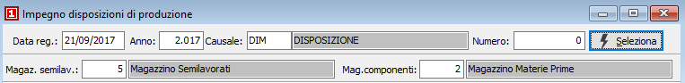
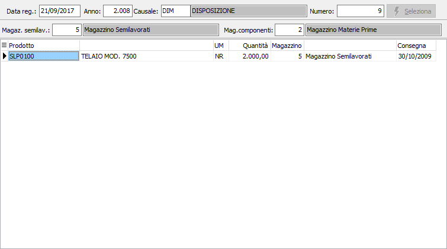
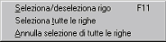

Impegno disposizioni di produzione
La procedura consente di registrare l'impegno in magazzino per i prodotti disposti. La parte superiore della finestra presenta i parametri selezione della disposizione ed i codici dei magazzini relativi a semilavorati e materie prime.

DATA REGISTRAZIONE: definisce la data a cui deve essere registrato l'impegno, viene proposta la data di sistema.
ANNO: anno della disposizione da selezionare.
CAUSALE: codice della Causale disposizioni da selezionare. Sul campo sono attive le funzioni di ricerca (F9).
NUMERO: numero della disposizione da selezionare. Sul campo sono attive le funzioni di ricerca sulle disposizioni inserite (F9).
MAGAZZINO SEMILAVORATI: codice del magazzino da utilizzare per i progressivi dei semilavorati. Sul campo sono attive le funzioni di ricerca (F9) sulla tabella magazzini. Viene proposto, se attiva la gestione, quello riportato in configurazione produzione.
MAGAZZINO COMPONENTI: codice del magazzino da utilizzare per i progressivi delle materie prime. Sul campo sono attive le funzioni di ricerca (F9) sulla tabella magazzini. Viene proposto quello riportato in configurazione produzione.
La pressione del pulsante Seleziona porta le righe della disposizione nella griglia sottostante, da cui è possibile selezionare quelle per cui generare l'impegno in magazzino.

In questa sezione è possibile scegliere per quali prodotti della disposizione generare l'impegno in magazzino.
Per selezionare oppure annullare la selezione di un rigo è sufficiente fare doppio clic con il mouse sul rigo interessato (se selezionato verrà

annullata la selezione altrimenti il contrario). È anche possibile utilizzare il menù indicato a lato (attivato tramite la pressione del tasto destro del mouse). È consentito selezionare o deselezionare un solo rigo oppure tutte le righe.Se un rigo viene selezionato lo sfondo appare di colore giallo, se è già stato precedentemente effettuato l'impegno lo sfondo assume un colore giallo molto più chiaro, altrimenti lo sfondo rimane bianco.
La pressione sul pulsante Salva posto sulla toolbar determina l'esecuzione dell'elaborazione e la conseguente generazione dell'impegno in magazzino per i prodotti selezionati.